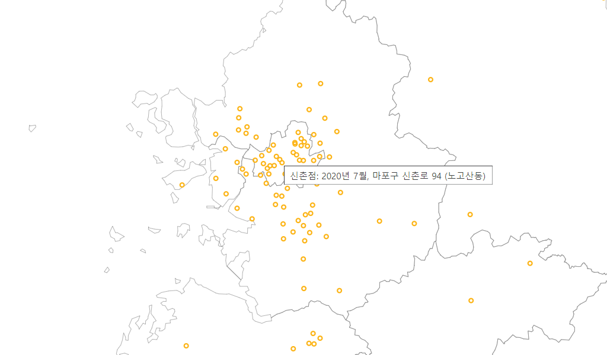

최근 이마트가 서울 신촌점을 개점하면서 화제로 떠올랐었다. 오프라인 마트 규모가 정체되면서 신규 개점이 그간 별로 없었는데 오랜만에 개점한 것과 신촌 특성상 젊은 층을 대상으로 했는데 오히려 주변 주민들이 많이 몰렸다는 것이 여러 뉴스로 보도되었다.
전부터 지도를 활용한 작업들이 좀 있었는데 이마트의 지점들도 지도를 활용해 나타내면 좋겠다 싶었고 특히나 시간에 따라 애니메이션으로 보여주면 좋겠다 싶어 만들어 보기로 했다. 일단 결과물은 여기서 볼 수 있다.

제작 과정은 다음과 같다.
이마트 지점 데이터 수집
이마트 지점 정보는 나무 위키를 갈무리해서 구했다.
- HTML을 읽은 후 정규식
/>\s*([^<]+?점) *<br>(\d+)\.(\d+)[\d. ]*개/g와 같은 형태를 사용하여 "창동점 1993.11.12 개업"과 같은 형태의 문자열에서 지점 이름들을 추출하고 - HTML을 파싱하여 DOM 구조에서
table.wiki-table td:first-child div.wiki-paragraph요소들 안에 들어있는 지점 이름에 따라 표 쎌에서 주소를 추출했으며 - 카카오 지도 API를 사용하여 각 주소의 위경도를 구한 후
- 이러한 지점 정보를 JSON으로 저장했다.
지도 데이터 가공
지도를 그리기 위해서는 시도 경계 데이터가 필요한데 이상하게도 내가 사용하는 도구들로는 국가공간정보포털에서 제공하는 데이터를 사용하면 몇몇 시도가 나타나지 않았다. 그래서 민간 사이트에서 데이터를 받았으며(감사합니다!) 아래와 같이 가공했다.
-
mapshaper 사이트에 파일을 업로드한다. 이때 옵션에서
snap vertices,encoding=euc-kr을 지정하고 Import한다. -
Simplify > Apply를 차례로 누르고 Settings 값을 적당히 설정한다. 0.5%로 하니 괜찮았다.
-
Console을 누르고 아래와 같이 하여 wgs84 좌표계로 변환한다. wgs84는 우리가 흔히 아는 위경도 좌표계다.
mapshaper -proj wgs84 -
Export를 누르고 TopoJSON, Export를 차례로 눌러 내보낸다. TopoJSON 형식은 d3에서 사용하는 형식으로서 일반적으로 사용하는 GeoJSON보다 파일 크기를 많이 줄일 수 있다.
화면 표시
데이터가 다 준비됐으면 아래와 같은 로직으로 화면을 표시할 수 있다. 화면은 연월 시점을 설정하는 슬라이더와 지도를 표시하기 위한
<div> 정도로만 구성했다.
- 이마트 데이터를 개점 시점에 따라 정렬하고 최소, 최대의 기간 간격을 구하여 슬라이드의 값 범위로 설정한다.
d3.geoMercator()와 같은 지도 투영법(projection) 개체에 대해 지도의 중심점과 배율을 설정한다.- SVG 개체에 지도를 표시할 그룹을 만들고 SVG path 요소에
topojson모듈을 사용하여 데이터를 붙인다. - 앞서의 투영법 개체를 사용하여 각 이마트 지점의 위경도를 화면에 투영하는 함수를 만들고 연월 슬라이더 값이 변경될 때마다 함수를 부르도록 이벤트를 붙인다.
- 지도 확대/축소/이동도 처리되도록 마우스 이벤트를 붙인다.
실제 소스가 보고 싶다면 결과물의 소스를 참고하도록 한다.
맺음말
별로 대단할 것 없는 데이터 시각화 예시지만 그래도 도움될 분들이 있다면 다행이겠다. 요즘 코로나로 한참 나라별 발병 현황 시각화가 유행이었는데 단순히 유행이 아니라 앞으로도 얼마나 갈지 모르는 현상이 되다 보니 지도를 통한 데이터 시각화가 계속 보이는 것도 같다.
또 한 가지, 시각화의 효과를 높이려면 애니메이션이 확실히 필요함을 알 수 있다. 이 점에서 CSS3가 아주 유용해진다. 프로그래밍으로 애니메이션을 구현하려면 복잡하고 효과도 안 좋지만 CSS3 transition, transformation을 사용함으로써 간단한 코딩으로 매끄럽고 효과적인 애니메이션이 가능하다.